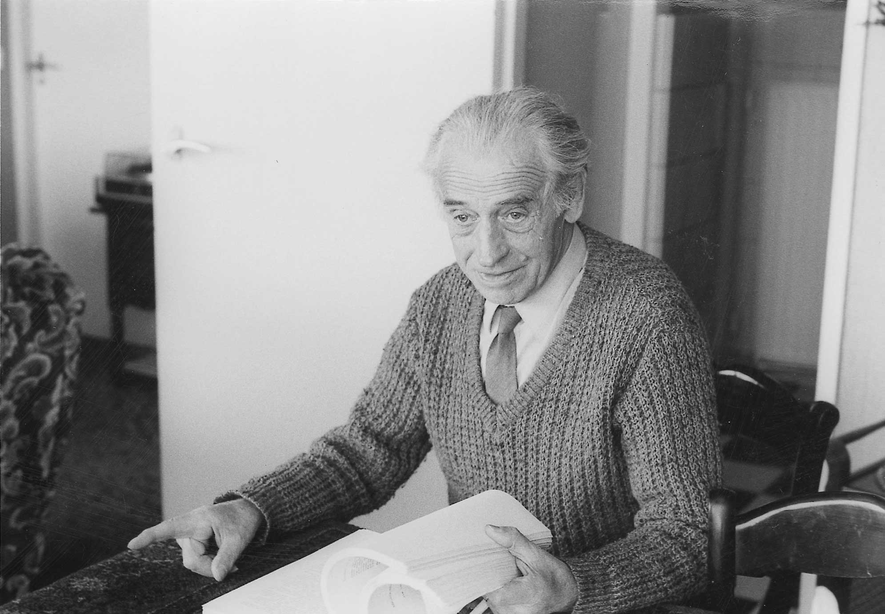

Henk Sloot
My father

Henk in 1984, talking about his second book in a newspaper interview
Here is a timeline of Henk Sloot's life:
- 1908 - Henk (Henderikus Franciscus) Sloot is born in Frederiksoord (part of Weststellingwerf, Friesland, The Netherlands), in a small colony house.
In the 19th century, the 'Maatschappij van Weldadigheid' ('society of well-doing') founded a colony in this region, where unemployed people from the provinces North- and South-Holland were sent to work on the land. - 1913 - The Sloot family moves into a new farm, also built by the Maatschappij van Weldadigheid.
- 1920 - Finishes primary school, works on his parents' farm
- 1926 - Attends a 2-year agricultural course
- 1928 - Military service in Remonte Depot in Milligen, not as a Hussar, as he had hoped, but as a Hussar horses' carer.
- 1929 - Leaves military service and returns to his family
- 1930 - Leaves his family's house. He doesn't want to become a farmer like his father, and seeks adventure as a polder labourer.
- 1931 - The adventure continues: Henk moves to 'Holland' (province South-Holland) and works on several farms as a swain.
- 1939 - Gets mobilised because of Germany threatening to invade the Netherlands
- 1940 - Marries Alie Gouweleeuw a couple of weeks before the German invasion. They settle down in Den Haag.
- 1941 - Gets a job in milk factory Van Paridon in Wassenaar.
- 1958 - Alie dies. Henk and Alie had no children.
- 1959 - Marries Riet Wijsman. They move to Zoetermeer and get two daughers, Marian and Corine.
Every day, he goes to his work in Wassenaar on his racing bicycle, no matter what weather it is. - 1974 - Retires. At that point he has acquired a chief's position in the factory where he started out 33 years ago. For a couple of years, he continues working; a part-time job in a lab equipment factory in Zoetermeer.
- 1976 - Starts writing about his life.
- 1981 - Finishes a book about his life in Den Haag during World War 2 ("Een uit velen"). He tries to find a publisher for his books but without success. A local newspaper publishes an article about him and his book. In the article he mentions NIOD, the Dutch Institute for War Documentation, that's willing to add his manuscript to their collection.
But in 2014, as it turns out, NIOD doesn't have the manuscript. They receive a copy. - 1984 -Finishes a book about his childhood and early youth ("De hoeve aan de heikant"). This book also doesn't get published. But a newspaper in his birth region publishes a couple of fragments from his manuscript.
He continues writing, this time about his years as a young adult. - 1985 - His health deteriorates. Lung cancer is discovered in an early stage. He gets cured, but after that he gets a stroke, which leaves him partly paralysed. He also suffers from aphasia, and has to move to a nursing home.
- 1988 - Dies at the age of 79.